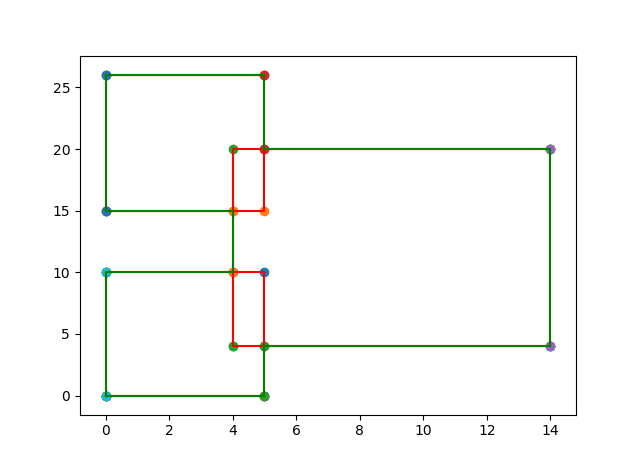

Input 20
3
0 0
5 10
0 15
5 26
4 4
14 20
Output 20
Measure = 254
Number of Contour Lines = 12
Contour Line Segments:-
0 0 5 0
5 4 14 4
0 10 4 10
0 15 4 15
5 20 14 20
0 26 5 26
0 0 0 10
0 15 0 26
4 10 4 15
5 0 5 4
5 20 5 26
14 4 14 20
Contour Length = 88
